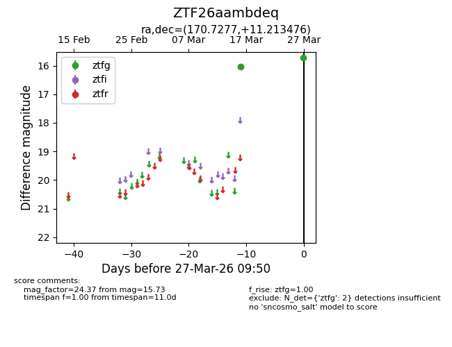
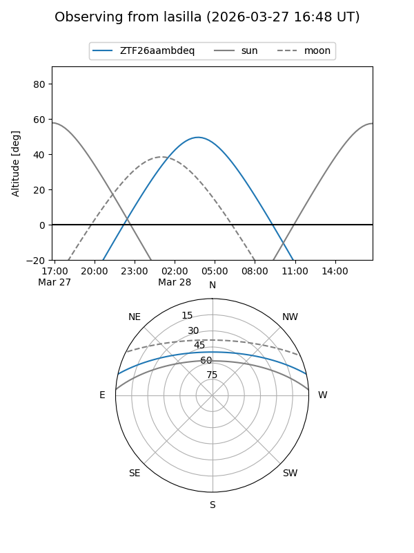
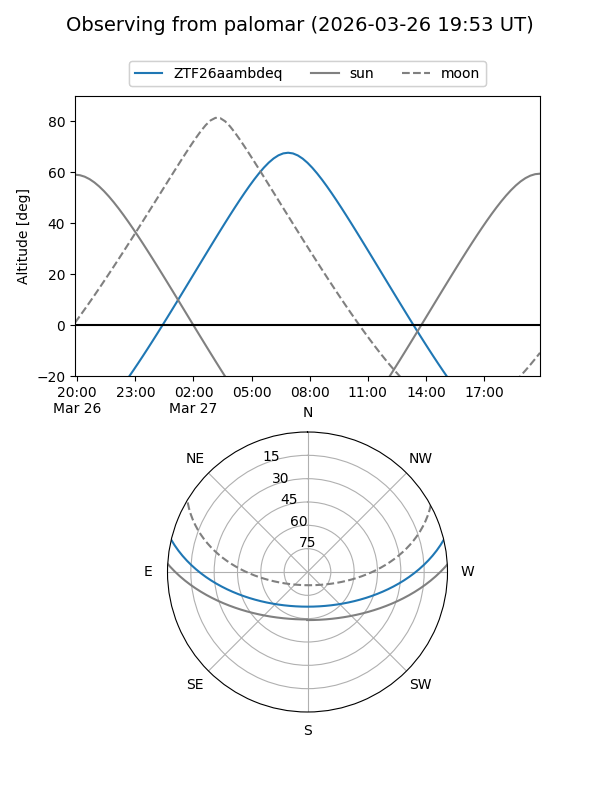
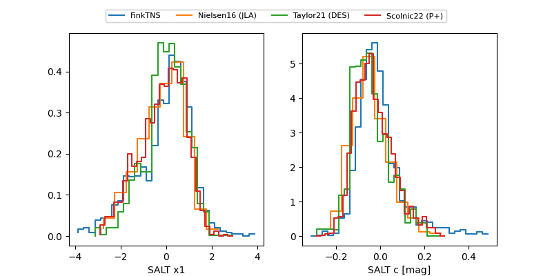

ZTF26aambdeq
Target ZTF26aambdeq at 2026-03-27 09:53
Aliases and brokers:
FINK: link
Lasair: link
ALeRCE: link
alt names
ZTF26aambdeq (ztf,fink_ztf)
Coordinates:
equatorial (ra, dec) = 170.7277,+11.21348
equatorial (HMS+DMS) = 11:22:54.64,+11:12:48.51
galactic (l, b) = (246.0697,+63.81162)
Flags:
Photometry:
last ztfg=15.73
2 ztfg detections
Lightcurve

Visibility


Additional plots
